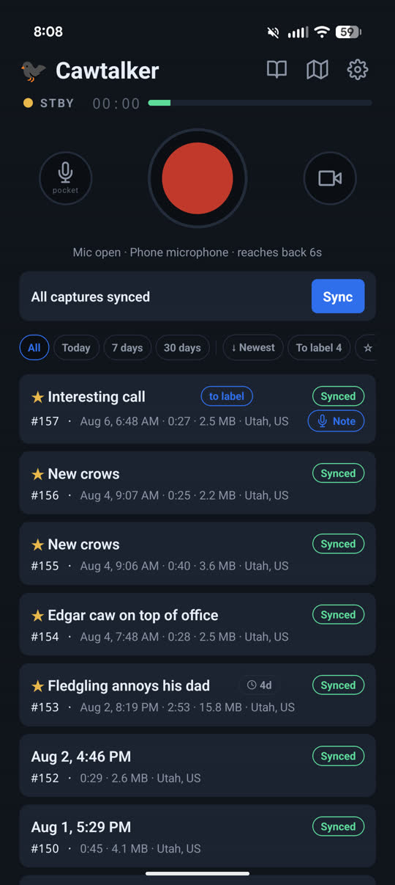
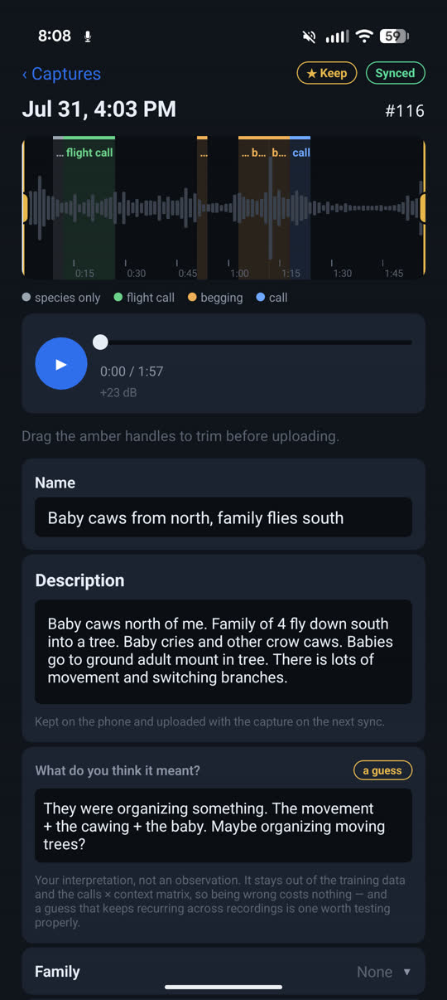
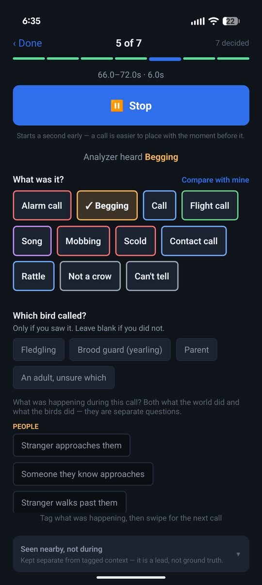
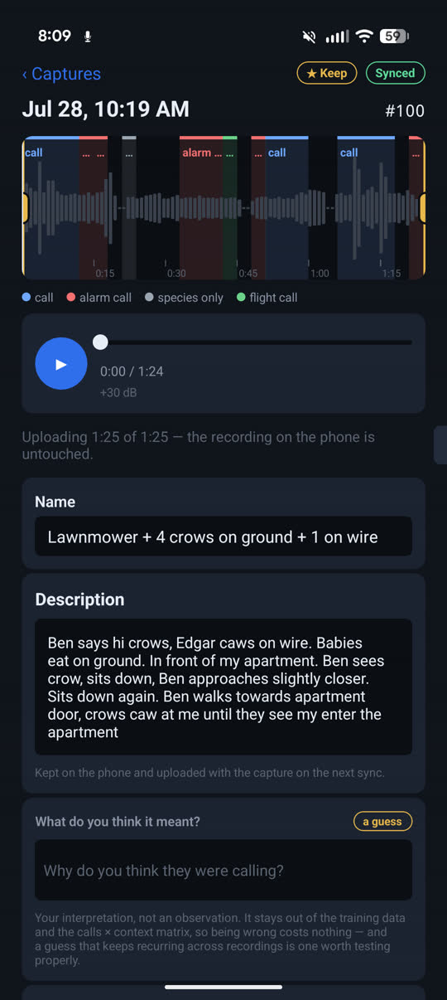
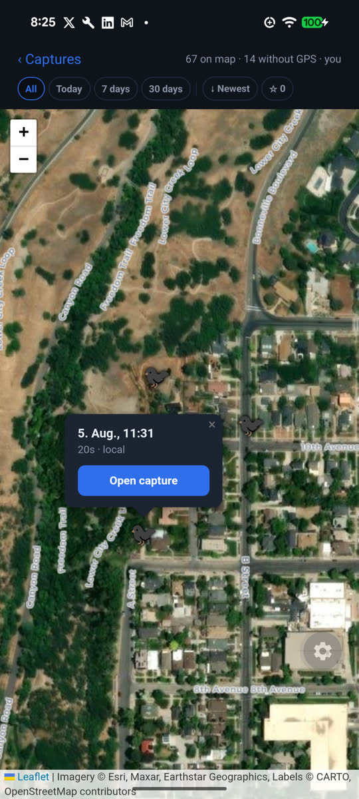
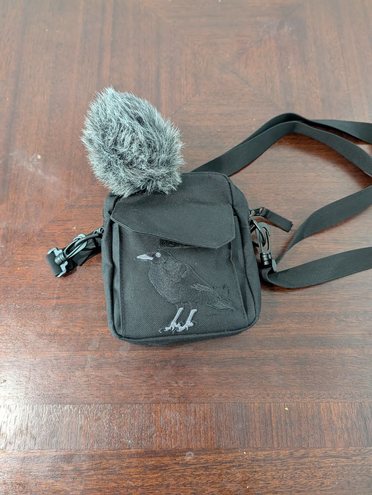

The app
Android, local-first. Records unprocessed 48 kHz audio and video, shows the waveform, and uploads only when asked, so an interrupted upload is the normal case, and every step is resumable and safe to repeat.
Building a labeled set by hand does not scale, so the collection is its own system: record corvid audio in the field with GPS, get it analyzed, and say what was heard and what was happening.







Android, local-first. Records unprocessed 48 kHz audio and video, shows the waveform, and uploads only when asked, so an interrupted upload is the normal case, and every step is resumable and safe to repeat.
Detection and call-typing run in the background, off the recording device. Findings come back attached to the waveform, and nothing waits on a model to finish.
Where the work happens. Calls get confirmed, corrected, or marked by ear, and each one tagged with what was going on at the time.

Labels are what the bird said: a span plus a call type from a closed vocabulary. They are the only thing that feeds training. Context is what a human saw while that call was made, and it attaches to the call rather than the recording: tag the whole capture and you credit every situation to every call in it, so a clip where a dog walks through and the crow later sings would report that crows sing at dogs. Observations are free text written afterwards, to explain a confusing prediction and to find which situations recur often enough to earn a tag of their own.
The field app is Android, free, and in a closed preview: it records, labels and syncs to the project server, so a recordist anywhere can add their crows to the corpus. Ask below and Ben sends an invite with the app and the token it needs to join. Say where you would record and which corvids are there; a population the corpus does not have yet is the best reason to say yes.
Have corvids nearby? Ask for the field app, or read how to collaborate.